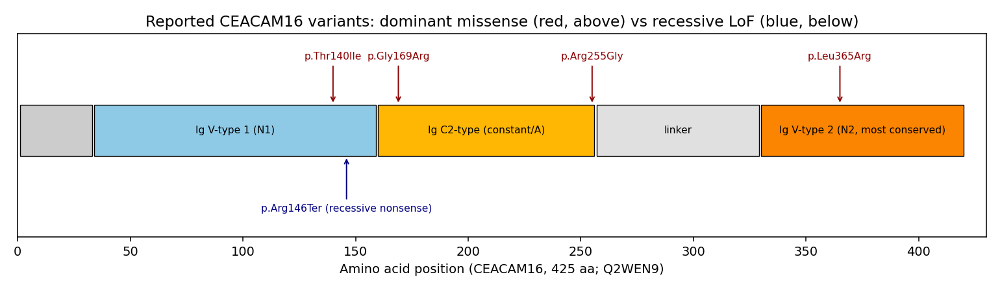

1. Disease Information
Overview. DFNA4B is a form of hereditary, nonsyndromic (hearing loss occurring in isolation, without associated systemic features), sensorineural hearing impairment inherited in an autosomal dominant pattern. It is one of the allelic disorders caused by variants in CEACAM16 and corresponds to the "B" subtype at the DFNA4 locus. The disease is defined at the disease/gene aggregate level (OMIM, ClinVar, published pedigrees) rather than from individual EHR records; the evidence base is a set of multigenerational families and de novo cases characterized by clinical audiometry and molecular genetics.
Key identifiers.
Table (click to expand)
| Resource | Identifier |
|---|---|
| MONDO | MONDO:0013823 |
| OMIM (phenotype) | #614614 (DFNA4B) |
| Gene | CEACAM16 (HGNC), OMIM *614591 |
| Cytogenetic locus | 19q13.32 (DFNA4 region) |
| Inheritance | Autosomal dominant |
| MeSH (parent concept) | Hearing Loss, Sensorineural; Deafness |
| ICD-10 | H90.5 (unspecified sensorineural hearing loss) — no DFNA4B-specific code |
| ICD-11 | AB50–AB52 range (sensorineural hearing impairment) — no specific code |
Synonyms / alternative names. DFNA4B; deafness, autosomal dominant 4B; nonsyndromic hearing loss DFNA4 (CEACAM16-related dominant form). The recessive allelic disorder is designated DFNB (autosomal recessive nonsyndromic hearing loss, CEACAM16-related; see Section 4).
Information source. Aggregated disease-level resources (OMIM, ClinVar, gene-disease literature) and published family/case reports — not individual patient EHR data.
2. Etiology
Primary cause — genetic. DFNA4B is a monogenic disorder caused by heterozygous variants in CEACAM16. It is not attributable to environmental, infectious, or acquired causes; the etiology is entirely germline genetic. Reported causal variants are predominantly missense changes in conserved regions of the protein (see Section 4).
Genetic risk factors. The disease-determining factor is the presence of a single heterozygous pathogenic CEACAM16 variant. Documented dominant variants include: - p.Thr140Ile — large Russian family PMID: 39157884 - p.Gly169Arg (c.505G>A) — Chinese family PMID: 25589040 - p.Arg255Gly (c.763A>G) — Chinese family PMID: 35292975 - p.Leu365Arg — de novo case PMID: 26648831
Environmental risk factors / modifiers. No specific environmental risk factors are established for DFNA4B itself. However, because the TM is a shared structure whose integrity buffers the cochlea against environmental insults, exposures known to accelerate sensorineural hearing loss generally — noise exposure, aging, ototoxic drugs (aminoglycosides, platinum agents) — are biologically plausible aggravators of an already-compromised TM. Supporting this concept, mice heterozygous for a TM-gene (TECTB) missense variant show increased susceptibility to noise-induced hearing loss despite normal baseline thresholds PMID: 42702881 — evidence (from a related TM gene) that subclinical TM defects sensitize the cochlea to environmental damage. This is an inferred, not directly demonstrated, gene–environment interaction for CEACAM16.
Protective factors. No genetic or environmental protective factors have been specifically characterized for DFNA4B. Avoidance of noise and ototoxins is a reasonable, if unproven, protective strategy.
3. Phenotypes
DFNA4B is a "pure" auditory phenotype. The dominant clinical features and their characteristics are summarized below.
Table (click to expand)
| Phenotype | HPO term | Onset | Severity | Progression | Frequency in affected |
|---|---|---|---|---|---|
| Sensorineural hearing loss | HP:0000407 | Late-onset (~5–30 y) | Mild→severe with age | Slowly progressive | ~100% (defining) |
| High-frequency hearing loss | HP:0000421 / HP:0008542 | Earliest affected range | Initial deficit | Progressive, later involving mid/low frequencies | Characteristic initial pattern |
| Progressive hearing impairment | HP:0001730 | — | — | Progressive | Universal |
| Bilateral hearing loss | HP:0008625 (bilateral SNHL) | — | Symmetric | — | Universal |
| Tinnitus | HP:0000360 | Often the presenting symptom | Variable | — | Common early feature |
| Postlingual onset | HP:0011476 (postlingual sensorineural HL) | After speech acquisition | — | — | Universal |
Detail. The auditory phenotype is postlingual and typically begins in childhood or adolescence with tinnitus and elevation of high-frequency thresholds, then progresses with age to involve middle and lower frequencies, ultimately resembling age-related hearing loss. In a large five-generation Russian family (11 affected individuals), onset occurred between ages 5 and 20 years, "start[ing] with tinnitus and threshold increase at high frequencies" PMID: 39157884. A de novo case matched the described DFNA4B onset and severity PMID: 26648831, and Chinese families likewise showed late-onset, progressive loss PMID: 25589040, PMID: 35292975.
Quality-of-life impact. As a progressive, lifelong sensorineural hearing loss, DFNA4B carries the well-documented QoL burdens of adult-onset deafness: impaired speech comprehension (especially in noise), communication difficulty, social withdrawal, and — in later life — associations with cognitive decline and depression common to presbycusis-like hearing loss. Disease-specific QoL instruments have not been applied to DFNA4B cohorts; generic tools (SF-36, EQ-5D, HHIE) would apply. No mortality or systemic morbidity is associated.
4. Genetic / Molecular Information
Causal gene. CEACAM16 (carcinoembryonic antigen-related cell adhesion molecule 16), OMIM 614591, chromosome 19q13.32, within the DFNA4 linkage region. The gene encodes a secreted glycoprotein* — confirmed by immunofluorescence and Western blot PMID: 25589040 — that is a structural component of the tectorial membrane. The protein contains immunoglobulin-like (Ig) domains (including N-terminal variable/N-type and constant/A-type domains) characteristic of the CEACAM family.
Pathogenic variants (dominant, DFNA4B).
Table (click to expand)
| Variant (protein) | cDNA | Type | Family / origin | Functional consequence | PMID |
|---|---|---|---|---|---|
| p.Thr140Ile | — | Missense | Russian, 5-gen (11 affected) | Dominant | 39157884 |
| p.Gly169Arg | c.505G>A | Missense | Chinese, 5-gen | Reduced mutant secretion efficiency | 25589040 |
| p.Arg255Gly | c.763A>G | Missense | Chinese, 4-gen | Increased secretion of mutant protein | 35292975 |
| p.Leu365Arg | — | Missense | De novo | Dominant, matched DFNA4B phenotype | 26648831 |
Dominant variants are missense and cluster within the conserved Ig-like domains. Functional studies in transfected HEK293T cells reveal two contrasting biochemical consequences: p.Gly169Arg reduces secretion efficiency ("the secretion efficacy of the mutant CEACAM16 is much lower than that of the wild type") PMID: 25589040, whereas p.Arg255Gly increases intracellular and extracellular mutant protein levels PMID: 35292975. Both are interpreted as deleterious, consistent with a dominant-negative / altered-secretion mechanism in which the abnormal monomer poisons assembly of the multimeric TM matrix rather than simply reducing gene dosage.
Variant classification. Reported dominant variants are classified pathogenic/likely pathogenic by ACMG/AMP criteria on the basis of co-segregation in multigenerational families, absence in matched controls (e.g., not present in 200 ancestry-matched controls for p.Gly169Arg), a de novo occurrence (p.Leu365Arg), and supportive functional data.
Allelic recessive form (DFNB). Biallelic loss-of-function variants in CEACAM16 cause autosomal recessive nonsyndromic hearing loss — mechanistically and phenotypically distinct from dominant DFNA4B: - Homozygous splice-altering variants c.37G>T and c.662-1G>C (Iranian families) PMID: 29703829 - Homozygous nonsense c.436C>T (p.Arg146Ter) PMID: 30514912
The authors of the recessive reports concluded that "loss-of-function variants in CEACAM16 cause autosomal recessive hearing loss in humans" PMID: 30514912. Thus CEACAM16 exhibits dual inheritance: dominant missense (poison-monomer) vs. recessive LoF (protein absence).
Allele frequency. Dominant pathogenic variants are private/rare, absent from population controls and gnomAD at appreciable frequency.
Somatic vs germline. Entirely germline; no somatic involvement.
Modifier genes. No formally established modifier genes. Given that CEACAM16 functions within a shared TM protein network, functional variants in interacting partners (TECTA, TECTB, OTOG, OTOGL, OTOA) are plausible modifiers of TM integrity and hearing thresholds, but this is inferential.
Epigenetics / chromosomal abnormalities. No disease-specific DNA-methylation, histone, or large-scale chromosomal abnormalities are reported for DFNA4B. It is a point-mutation disorder.
{{figure:ceacam16_variant_map.png|caption=Schematic map of reported dominant (missense) versus recessive (loss-of-function/splice/nonsense) CEACAM16 variants across the protein's immunoglobulin-fold domain architecture. Dominant DFNA4B variants cluster within conserved Ig domains and act via dominant-negative/altered-secretion mechanisms, whereas biallelic LoF variants truncate the protein and cause the recessive allelic form.}}
5. Environmental Information
DFNA4B is a purely genetic disorder; no environmental, lifestyle, or infectious agent is a necessary cause. However, environmental cochlear stressors are plausible disease aggravators rather than initiators:
- Environmental / occupational: Noise exposure and ototoxic agents (aminoglycoside and platinum-based drugs) may accelerate hearing decline in an already TM-compromised cochlea. Direct evidence in CEACAM16 patients is lacking; the concept is supported by the related TM gene TECTB, where heterozygous mice showed increased noise-induced-hearing-loss susceptibility PMID: 42702881.
- Lifestyle: No specific dietary, smoking, or alcohol associations established for DFNA4B.
- Infectious agents: None. Not applicable.
6. Mechanism / Pathophysiology
Ordered causal chain (initiating lesion → clinical manifestation)
- A heterozygous missense variant in CEACAM16 (e.g., p.Gly169Arg, p.Arg255Gly, p.Thr140Ile, p.Leu365Arg) alters a conserved Ig-domain residue → produces a structurally abnormal CEACAM16 monomer (demonstrated by segregation + in vitro expression).
- The mutant monomer has altered secretion — reduced (p.Gly169Arg) or aberrantly increased/retained (p.Arg255Gly) → impairs correct incorporation of CEACAM16 into the tectorial-membrane matrix (inferred from in vitro secretion assays; PMID: 25589040, PMID: 35292975).
- Because CEACAM16 normally bridges α-tectorin (TECTA) and β-tectorin (TECTB), defective CEACAM16 → destabilizes TECTA–TECTB cross-links and the multimeric TM network, acting as a poison monomer (dominant-negative) (interaction demonstrated in mouse; PMID: 21368133, PMID: 25080593).
- Disrupted cross-linking → failure to form/maintain the striated-sheet matrix and Hensen's stripe, reduced TECTB levels (demonstrated in Ceacam16-null mice; PMID: 25080593).
- Compromised TM structure → abnormal coupling between the TM and the tips of the tallest OHC stereocilia, and with age, accelerated TM degradation/detachment (PMID: 31249509).
- Impaired TM–stereocilia coupling → degraded cochlear amplification and frequency tuning; the active process becomes unstable → elevated/abnormal otoacoustic emissions, including spontaneous OAEs as a micromechanical-instability biomarker (PMID: 25080593, PMID: 26691158, PMID: 34332206).
- Progressive loss of amplification, initially in the high-frequency (basal) cochlea → clinical high-frequency, slowly progressive, bilateral sensorineural hearing loss (the DFNA4B phenotype).
CEACAM16 missense (Ig domain)
│ altered folding/secretion
▼
Poison monomer incorporated into TM matrix ──(dominant-negative)
│ destabilizes TECTA–TECTB cross-links
▼
↓TECTB, no striated-sheet matrix, loss of Hensen's stripe
│
▼
TM–OHC stereocilia coupling impaired → accelerated TM degradation w/ age
│
▼
Cochlear amplifier unstable → abnormal/spontaneous OAEs
│
▼
High-frequency → broadening, slowly progressive bilateral SNHL
Branch (recessive): Biallelic LoF → total absence of CEACAM16 → TM matrix underdevelopment → recessive progressive hearing loss (PMID: 30514912, PMID: 29703829).
Detail by category
- Molecular / structural pathway. The core defect is in extracellular-matrix assembly of the tectorial membrane, not in a classic intracellular signaling cascade (Wnt/MAPK/mTOR are not implicated). CEACAM16 colocalizes and co-immunoprecipitates with α-tectorin PMID: 21368133 and additionally interacts with β-tectorin, "indicating that it may stabilize interactions between TECTA and TECTB" PMID: 25080593.
- Protein dysfunction. Misfolding/altered secretion of an Ig-domain glycoprotein; dominant-negative incorporation of aberrant monomer into a multimeric matrix. GO terms: extracellular matrix structural constituent (GO:0005201).
- Cellular processes. Non-cell-autonomous: the primary lesion is in a secreted matrix, secondarily impairing OHC mechanotransduction/amplification. Relevant GO biological processes: sensory perception of sound (GO:0007605), inner ear morphogenesis (GO:0042472), extracellular matrix organization (GO:0030198).
- Tissue-damage mechanism. Age-accelerated degradation and detachment of the TM (PMID: 31249509); loss of Hensen's stripe correlating with SOAE predominance >15 kHz PMID: 25080593.
- Biochemical / biophysical abnormality. The TM is a passive mechanical element that shapes cochlear tuning; its disruption alters the coupled OHC feedback loop and destabilizes the active process, producing spontaneous otoacoustic emissions in ~70% of Ceacam16-null homozygotes (vs <3% of wild-type) PMID: 25080593.
- Immune involvement / metabolic changes / epigenetics. None implicated. Not applicable.
- Cell types (CL) and anatomy (UBERON): outer hair cell (CL:0000601), inner hair cell (CL:0000589); tectorial membrane (UBERON:0002233), organ of Corti (UBERON:0002227), cochlea (UBERON:0001844).
7. Anatomical Structures Affected
- Organ level: The inner ear / cochlea is the sole affected organ (UBERON:0001846 internal ear; UBERON:0001844 cochlea). No secondary organ involvement; no other body system is affected — consistent with the nonsyndromic designation.
- Body system: Auditory/vestibulocochlear component of the sensory/nervous system (peripheral auditory system). Vestibular function is spared.
- Tissue/cell level: The primary lesion is in the acellular tectorial membrane (UBERON:0002233), an extracellular matrix. Secondarily affected are the sensory outer hair cells (CL:0000601) whose tallest stereocilia are coupled to the TM, and by extension the inner hair cells (CL:0000589) that transmit the encoded signal. The organ of Corti (UBERON:0002227) is the functional epithelium.
- Subcellular level: CEACAM16 is a secreted protein trafficked through the ER/Golgi secretory pathway (GO:0005783 endoplasmic reticulum, GO:0005796 Golgi lumen for biosynthesis) and deposited into the extracellular matrix / tectorial membrane (GO:0031012). Stereociliar tips (GO:0032420 stereocilium) are the coupling site.
- Localization / lateralization: Bilateral and symmetric; the disease progresses along the tonotopic (base→apex) axis, initially affecting the basal (high-frequency) cochlea.
8. Temporal Development
- Onset: Postlingual and late-onset, typically emerging in childhood/adolescence and continuing into adulthood (reported onset ranges ~5–30 years; age 5–20 years in the large Russian pedigree) PMID: 39157884. Onset pattern is insidious/chronic, not acute.
- Progression: Slowly progressive over decades. It begins at high frequencies with tinnitus, then broadens to mid/low frequencies, ultimately resembling presbycusis. Progression rate is slow but effectively lifelong.
- Disease course: Chronic, progressive, non-remitting. There are no episodic or relapsing-remitting features and no spontaneous remission.
- Critical periods / windows for intervention: No pharmacologic window is defined. The relevant intervention window is functional — timely hearing-aid fitting as thresholds rise, and cochlear implantation when hearing loss becomes severe/profound.
9. Inheritance and Population
- Inheritance pattern: Autosomal dominant (dominant DFNA4B, missense). The allelic recessive form is autosomal recessive (biallelic LoF).
- Penetrance: High, consistent with strong co-segregation across multigenerational pedigrees; likely age-dependent given the progressive, late-onset nature (a young carrier may be pre-symptomatic). Formal penetrance estimates are not published.
- Expressivity: Variable in age of onset and rate of progression across and within families.
- De novo mutation: Documented (p.Leu365Arg), so absence of family history does not exclude the diagnosis PMID: 26648831.
- Genetic anticipation / germline mosaicism / founder effects / consanguinity: No anticipation (not a repeat-expansion disorder). Consanguinity is relevant to the recessive allelic form (e.g., Iranian families with homozygous variants PMID: 29703829), not to dominant DFNA4B. No established founder effect for the dominant form.
- Carrier frequency: Not established; dominant variants are private/rare.
- Epidemiology: DFNA4B is a rare cause of hereditary hearing loss; precise prevalence/incidence figures are not established. It is one of ~30+ ADNSHL genes and accounts for a small fraction of dominant nonsyndromic hearing loss PMID: 25589040. Reported dominant families are of Russian and Chinese ancestry, but this reflects ascertainment rather than a demonstrated ethnic predilection.
- Sex ratio: No sex bias expected or reported (autosomal). Male:female ≈ 1:1.
- Geographic distribution: Reported worldwide in individual families; no endemic clustering.
10. Diagnostics
- Audiological testing (core): Pure-tone audiometry reveals bilateral, symmetric, high-frequency-predominant sensorineural hearing loss; otoacoustic emissions (OAE) are notable — TM defects produce abnormal and spontaneous otoacoustic emissions (SOAEs), a potential noninvasive biomarker of TM/cochlear-amplifier instability PMID: 25080593, PMID: 34332206. Auditory brainstem response (ABR) confirms sensorineural pattern and threshold.
- Genetic testing (definitive): Molecular confirmation via CEACAM16 sequencing. Recommended approaches:
- Comprehensive hearing-loss gene panels / targeted NGS (which include CEACAM16 alongside TECTA, TECTB, OTOG, OTOGL, GJB2, etc.) — the practical first-line test PMID: 35292975, PMID: 41897287.
- Whole-exome sequencing (WES) — used to identify CEACAM16 variants in several families, often combined with linkage analysis PMID: 25589040.
- Single-gene testing / Sanger for cascade testing of a known familial variant.
- Linkage analysis historically mapped the locus to 19q13 in extended pedigrees PMID: 25589040.
- Chromosomal microarray, karyotyping, FISH, mtDNA, and repeat-expansion testing are not indicated (point-mutation, autosomal, non-repeat disorder).
- Imaging: No characteristic CT/MRI finding; imaging is used to exclude other causes and for cochlear-implant planning.
- Clinical criteria / differential diagnosis: Diagnosis rests on the combination of a compatible progressive high-frequency SNHL phenotype, dominant family history (or de novo finding), and a pathogenic CEACAM16 variant. Differential diagnosis includes other TM-related dominant hearing losses — especially DFNA8/12 (TECTA) and the newly described TECTB-related dominant hearing loss PMID: 42702881, PMID: 40832383 — as well as OTOG/OTOGL forms and, importantly, age-related hearing loss (presbycusis), which DFNA4B closely mimics. Genetic testing distinguishes these.
- Screening: No population newborn screening for DFNA4B specifically (it is late-onset). Cascade genetic screening of at-risk relatives once a familial variant is identified is appropriate.
11. Outcome / Prognosis
- Survival / mortality: DFNA4B is not life-limiting. Life expectancy is normal; there is no disease-specific mortality.
- Morbidity / disability: The morbidity is functional — progressive hearing disability affecting communication, education, employment, and social participation, with the downstream QoL and (in older adults) cognitive/psychosocial burdens of untreated hearing loss.
- Disease course: Chronic, slowly progressive, lifelong. Without amplification, high-frequency deficits broaden; with hearing aids and, when needed, cochlear implants, functional hearing can be substantially restored.
- Recovery potential: No spontaneous recovery; the structural TM defect is not self-repairing. Functional outcomes with rehabilitation are generally good.
- Prognostic factors: Specific variant, family-specific rate of progression, age at onset, and cumulative environmental exposures (noise/ototoxins) likely modulate the trajectory. Spontaneous/abnormal OAEs are a candidate biomarker of cochlear-amplifier status PMID: 34332206 but are not yet a validated clinical prognostic tool.
12. Treatment
There is no CEACAM16-specific or disease-modifying therapy. Management is rehabilitative and supportive:
- Hearing aids (amplification) for mild–moderate–severe loss (NCIT: Hearing Aid). First-line as thresholds rise.
- Cochlear implantation for severe-to-profound loss not adequately aided (NCIT: Cochlear Implant / Cochlear Implantation).
- Aural rehabilitation / speech-language therapy, assistive listening devices, and communication strategies.
- Genetic counseling for affected individuals and at-risk relatives (autosomal dominant, 50% transmission risk; account for possible de novo and for the distinct recessive allelic form).
- Avoidance of additional cochlear insults — noise protection and avoidance of ototoxic drugs where possible (supportive, not proven disease-modifying).
Pharmacotherapy / pharmacogenomics: None specific. Advanced therapeutics (gene/cell/RNA-based): Not available for DFNA4B. Current cochlear AAV gene therapy has clinical proof-of-concept only for recessive, hair-cell-intrinsic genes: AAV1-hOTOF partially restored hearing in children with DFNB9 — "AAV1-hOTOF gene therapy is safe and efficacious as a novel treatment for children with autosomal recessive deafness 9" PMID: 38280389 — and the field is expanding PMID: 39520052. Because CEACAM16 is a secreted extracellular-matrix protein and DFNA4B is dominant (dominant-negative), simple gene addition is unlikely to suffice; allele-specific silencing or gene editing would be required. The recessive LoF CEACAM16 form is conceptually more tractable for AAV-based gene replacement. No relevant clinical trials (NCT) target CEACAM16 at this time.
13. Prevention
- Primary prevention: Not possible for a germline dominant disorder. Reproductive options (preimplantation genetic testing, prenatal diagnosis) can prevent transmission where a familial variant is known and families elect to use them.
- Secondary prevention: Cascade genetic testing and periodic audiometric monitoring of at-risk/pre-symptomatic carriers enable early amplification. Because onset is late, standard newborn hearing screening will not detect pre-symptomatic carriers.
- Tertiary prevention: Prevent complications of untreated hearing loss (communication failure, social isolation, cognitive decline) through timely amplification/implantation and rehabilitation; minimize additional damage from noise and ototoxins.
- Genetic counseling: Central preventive tool — risk assessment, family planning, and clarification of the dominant vs. recessive allelic distinction.
- Immunization / public-health / environmental interventions: Not applicable (non-infectious, non-environmental etiology).
14. Other Species / Natural Disease
- Taxonomy / orthologs: Ceacam16 is conserved in mouse (Mus musculus, NCBI Taxon 10090) and other mammals; the mouse gene is the principal experimental ortholog. The TM and its protein constituents (TECTA, TECTB, CEACAM16, OTOG, OTOGL) are evolutionarily conserved across mammals, and the disease mechanism is conserved.
- Natural disease in other species: No well-characterized naturally occurring CEACAM16 deafness is documented in companion animals or wildlife (OMIA does not list an established natural CEACAM16 hearing-loss phenotype); the animal evidence is from engineered laboratory models (Section 15).
- Comparative biology: Mouse Ceacam16 models reproduce the human TM pathology, demonstrating strong cross-species conservation of the mechanism.
- Zoonotic potential: Not applicable (genetic disease).
15. Model Organisms
- Principal model — Ceacam16-null (knockout) mouse. This is the best-characterized model and strongly validates the human mechanism. Key findings:
- In the absence of CEACAM16, "TECTB levels are reduced, a clearly defined striated-sheet matrix does not develop, and Hensen's stripe … is absent" PMID: 25080593.
- CEACAM16 "is also shown to interact with TECTB, indicating that it may stabilize interactions between TECTA and TECTB" PMID: 25080593.
- Young null mice have largely normal ABR thresholds and DPOAEs but show enlarged stimulus-frequency and transiently-evoked emissions and spontaneous otoacoustic emissions in ~70% of homozygotes (vs <3% of wild-type); SOAE predominance >15 kHz correlates with loss of Hensen's stripe PMID: 25080593.
- The null shows accelerated age-related degradation/detachment of the TM PMID: 31249509.
- Related TM-mutant models that inform DFNA4B biology: Otoa (otoancorin)-deficient and Tecta mutant mice, in which SOAEs and TM detachment illuminate the general principle that TM defects destabilize the cochlear amplifier PMID: 26691158, PMID: 33340968; and a Tectb-C225Y knock-in showing TM disruption and noise susceptibility PMID: 42702881.
- Phenotype recapitulation: Good for the structural and micromechanical phenotype (TM matrix failure, loss of Hensen's stripe, abnormal OAEs, age-accelerated TM degradation). The null models the recessive (loss-of-function) biology directly; a dominant knock-in carrying a human missense variant (e.g., p.Gly169Arg) would be required to model the dominant-negative DFNA4B mechanism specifically — this is a current gap.
- Model limitations: Frequency ranges and cochlear tonotopy differ between mouse and human; young null mice retain near-normal thresholds, so the model captures early micromechanical instability better than end-stage human hearing loss; no dominant knock-in has been reported.
- Resources: MGI (mouse), and standard inner-ear physiology assays (ABR, DPOAE/SFOAE/SOAE, TM histology).
Mechanistic Model / Interpretation
DFNA4B is fundamentally a tectorial-membrane matrix disease. The unifying interpretation across human genetics and mouse physiology is that CEACAM16 is a molecular "staple" that cross-links the two tectorins (TECTA and TECTB) to build the TM's striated-sheet matrix and Hensen's stripe. Dominant missense variants introduce a defective monomer that poisons matrix assembly (dominant-negative / altered secretion), while biallelic LoF variants simply remove the staple (recessive). Either route weakens the TM's ability to couple to OHC stereocilia and to buffer the active cochlear amplifier. The physiological signature — abnormal and spontaneous otoacoustic emissions — reflects a destabilized but still-active amplifier, and with age the TM progressively degrades, producing the slowly progressive, high-frequency-first sensorineural hearing loss seen clinically.
Table (click to expand)
| Feature | Dominant DFNA4B | Recessive (allelic) |
|---|---|---|
| Variant type | Missense (Ig domains) | LoF: nonsense, splice |
| Mechanism | Dominant-negative / altered secretion (poison monomer) | Protein absence |
| Inheritance | Autosomal dominant | Autosomal recessive |
| Onset | Late-onset, postlingual | Postlingual, progressive |
| Gene-therapy tractability | Hard (needs allele-specific silencing/editing) | More tractable (gene replacement) |
Evidence Base
Table (click to expand)
| PMID | Contribution |
|---|---|
| 21368133 | Foundational: CEACAM16 maps to DFNA4, localizes to tallest OHC stereocilia tips and TM, colocalizes/co-IPs with α-tectorin. |
| 25080593 | Ceacam16-null mouse: reduced TECTB, no striated-sheet matrix, absent Hensen's stripe, SOAEs in 70%; CEACAM16 bridges TECTA–TECTB. |
| 25589040 | p.Gly169Arg dominant family; CEACAM16 is secreted; mutant has reduced secretion (deleterious). |
| 35292975 | p.Arg255Gly dominant family; mutant shows increased secretion — expands mechanism spectrum. |
| 39157884 | Large Russian family (p.Thr140Ile); defines late-onset (5–20 y), tinnitus + high-frequency onset, progression. |
| 26648831 | De novo p.Leu365Arg; confirms DFNA4B designation and postlingual phenotype. |
| 30514912 | Recessive LoF (p.Arg146Ter) — establishes distinct recessive mechanism. |
| 29703829 | Recessive splice variants (c.37G>T, c.662-1G>C). |
| 31249509 | Accelerated age-related TM degradation in Ceacam16-null. |
| 26691158, 34332206, 33340968 | SOAEs as biomarkers of TM defects across mouse mutants. |
| 42702881 | Related TM gene TECTB; noise susceptibility of heterozygous carriers (differential dx + GxE concept). |
| 38280389, 39520052 | Cochlear AAV gene therapy proof-of-concept — for recessive, hair-cell-intrinsic genes, contextualizing why DFNA4B remains molecularly untreated. |
Evidence-type mix: human clinical/genetic (family and de novo reports), in vitro functional (HEK293T secretion assays), and model-organism physiology (mouse Ceacam16 knockout). Mechanistic claims about TECTA/TECTB bridging and TM structure derive primarily from mouse data; human data establish gene–disease causation and the clinical phenotype.
Limitations and Knowledge Gaps
- Rarity and small samples. DFNA4B is defined by a handful of families/individuals; prevalence, penetrance, and expressivity are not quantitatively established.
- No dominant knock-in model. The mouse evidence is chiefly from the null (recessive-like) model; a knock-in of a human dominant missense variant is needed to test the dominant-negative mechanism directly.
- Divergent in vitro secretion phenotypes (reduced for p.Gly169Arg vs increased for p.Arg255Gly) suggest more than one biochemical route to dominance; the unifying mechanism at the matrix level is inferred, not fully resolved.
- Human TM tissue is inaccessible, so structural confirmation in patients (loss of Hensen's stripe, striated-sheet failure) relies on animal analogy.
- No natural-history study with standardized longitudinal audiometry; progression rates are described qualitatively.
- No disease-specific QoL, biomarker validation (e.g., clinical SOAE), or therapeutic development exists for DFNA4B.
Proposed Follow-up Experiments / Actions
- Generate a dominant Ceacam16 knock-in mouse (e.g., p.Gly169Arg or p.Arg255Gly) to directly test the dominant-negative mechanism and characterize TM structure, OAEs, and age-dependent hearing decline.
- Structural biology of CEACAM16 Ig domains (cryo-EM/crystallography or AlphaFold-guided modeling) to map how dominant variants disrupt TECTA/TECTB binding interfaces — informing allele-specific therapeutic design.
- Develop allele-specific silencing (ASO/siRNA) or CRISPR editing targeting the mutant allele, exploiting the recessive tolerance of CEACAM16 haploinsufficiency (biallelic LoF is required for recessive disease, implying heterozygous knockdown may be tolerated).
- Explore AAV gene replacement for the recessive LoF form as the more tractable near-term target, leveraging IHC/OHC-tropic capsids emerging from OTOF programs.
- Establish a prospective natural-history registry with serial audiometry and OAE testing to quantify progression, penetrance, and evaluate SOAEs as a clinical biomarker.
- Cascade genetic testing and counseling protocols for identified families, including reproductive-option discussion.
Report compiled from 28 reviewed publications and 5 confirmed findings. Evidence sources: human clinical/genetic, in vitro functional, and mouse model-organism studies.
Artifacts
- OpenScientist final report
- OpenScientist final report
- OpenScientist ceacam16 variant map

Reference Validation
Checked with linkml-reference-validator 0.2.1.
Table (click to expand)
| Outcome | Count |
|---|---|
| References checked | 17 |
| Resolved | 17 |
| Unresolved (possible confabulation) | 0 |
| Unverifiable | 0 |
| Quoted claims checked | 6 |
| Quoted claims found in source | 4 |
| Quoted claims not found in source | 2 |
| References weighed for topical relevance | 17 |
| On topic | 15 |
| Off topic | 0 |
Quotes not found in the cited source
Searched the abstract, any retrieved full text, and the title. A quote drawn from a part of the paper that was not retrieved will appear here too, so check before treating one as invented:
1 of these was searched against an abstract alone, with no full text retrieved - marked abstract only below. Where full text can be fetched, re-running with it will settle them; where the source publishes only a summary to PubMed, as GeneReviews chapters do, it will not, and the quote has to be checked by hand against the chapter itself.
PMID:39157884: "start[ing] with tinnitus and threshold increase at high frequencies"- closest text in source: "Eleven family members suffer from hearing impairment, which starts with tinnitus and threshold increase at high frequencies, since the age of 5-20 years"
PMID:25080593(abstract only): "TECTB levels are reduced, a clearly defined striated-sheet matrix does not develop, and Hensen's stripe … is absent"- closest text in source: "In the absence of CEACAM16, TECTB levels are reduced, a clearly defined striated-sheet matrix does not develop, and Hensen's stripe, a prominent feature in the basal two-thirds of the TM in WT mice, is absent"
Term Validation
Checked with linkml-term-validator 0.4.5, through the ols: adapter.
Table (click to expand)
| Outcome | Count |
|---|---|
| Terms checked | 22 |
| Resolved | 22 |
| Unresolved (possible confabulation) | 0 |
| Obsolete | 0 |
| Unverifiable | 0 |
| Terms whose name was checked | 11 |
| Terms named correctly | 3 |
| Terms named as a different term | 2 |
| Terms whose name is worth a second look | 6 |
Terms the report names something else
These identifiers resolve, so nothing about them looks wrong, and the ontology calls them something unrelated to what the report calls them. That usually means the identifier is not the one the sentence needs:
MONDO:0013823(2 mentions) - the report calls it "MONDO"; MONDO calls it autosomal dominant nonsyndromic hearing loss 4BHP:0008625(1 mention) - the report calls it "bilateral SNHL"; HP calls it Severe sensorineural hearing impairment
Terms whose name is worth a second look
The report's name for these is recognisably related to the term's own name without being one of them. A loose paraphrase reads the same way as a citation of the wrong sibling term - and so does a related synonym, which the ontology records precisely because it names something adjacent rather than the same thing - so these are listed rather than judged:
HP:0011476(1 mention) - the report calls it "postlingual sensorineural HL"; HP calls it Profound sensorineural hearing impairment, and lists "Profound sensorineural hearing loss" among its other namesCL:0000601(2 mentions) - the report calls it "outer hair cells"; CL calls it cochlear outer hair cellCL:0000589(2 mentions) - the report calls it "inner hair cells"; CL calls it cochlear inner hair cell, and lists "inner hair cell" among its other namesUBERON:0002233(2 mentions) - the report calls it "acellular tectorial membrane"; UBERON calls it tectorial membrane of cochlea, and lists "tectorial membrane" among its other namesUBERON:0002227(2 mentions) - the report calls it "organ of Corti"; UBERON calls it spiral organ of cochlea, and lists "organ of Corti" among its other namesGO:0031012(1 mention) - the report calls it "extracellular matrix / tectorial membrane"; GO calls it extracellular matrix